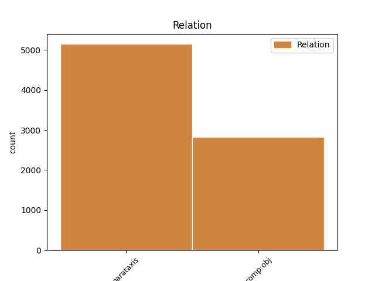
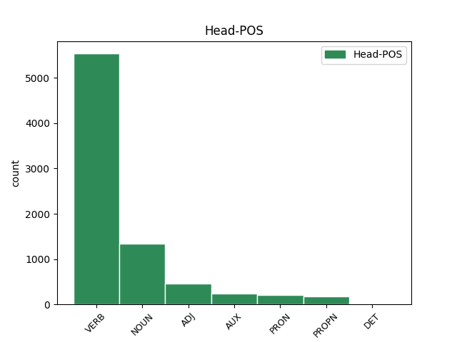
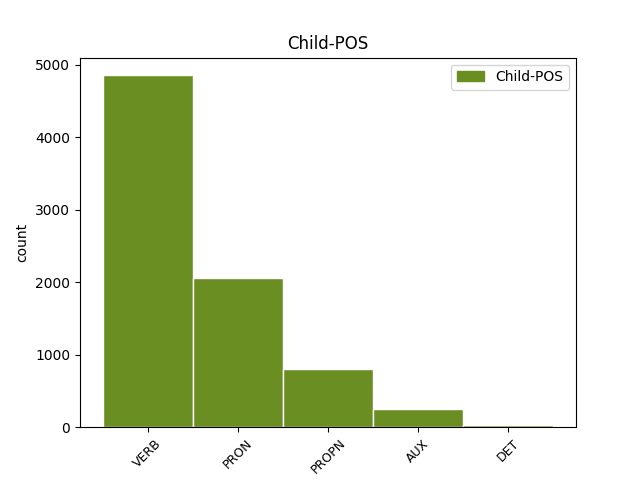

Distribution of features within this leaf



Agreement Rules sorted by frequency.
- When the dependent token is the parataxis(parataxis) of the head token, and the dependent token is VERB.
1 Но _ _ _ _ 0 _ _ _
2 кто-то _ _ _ _ 0 _ _ _
3 идет _ _ _ _ 0 _ _ _
4 мне _ _ _ _ 0 _ _ _
5 навстречу _ _ _ _ 0 _ _ _
6 и _ _ _ _ 0 _ _ _
7 , _ _ _ _ 0 _ _ _
8 может мочь VERB _ Aspect=Imp|Mood=Ind|Number=Sing|Person=3|Tense=Pres|VerbForm=Fin|Voice=Act 11 parataxis _ _
9 быть _ _ _ _ 0 _ _ _
10 , _ _ _ _ 0 _ _ _
11 прошел пройти VERB _ Aspect=Perf|Gender=Masc|Mood=Ind|Number=Sing|Tense=Past|VerbForm=Fin|Voice=Act 0 _ _ _
12 уже _ _ _ _ 0 _ _ _
13 пол _ _ _ _ 0 _ _ _
14 пути _ _ _ _ 0 _ _ _
15 … _ _ _ _ 0 _ _ _
1 - _ _ _ _ 0 _ _ _
2 Я _ _ _ _ 0 _ _ _
3 обязательно _ _ _ _ 0 _ _ _
4 ее она PRON _ Case=Acc|Gender=Fem|Number=Sing|Person=3 5 comp:obj _ _
5 расчищу расчистить VERB _ Aspect=Perf|Mood=Ind|Number=Sing|Person=1|Tense=Fut|VerbForm=Fin|Voice=Act 0 _ _ _
6 . _ _ _ _ 0 _ _ _
1 - _ _ _ _ 0 _ _ _
2 Ты _ _ _ _ 0 _ _ _
3 же _ _ _ _ 0 _ _ _
4 видишь видеть VERB _ Aspect=Imp|Mood=Ind|Number=Sing|Person=2|Tense=Pres|VerbForm=Fin|Voice=Act 0 _ _ _
5 , _ _ _ _ 0 _ _ _
6 дорога _ _ _ _ 0 _ _ _
7 заросла зарасти VERB _ Aspect=Perf|Gender=Fem|Mood=Ind|Number=Sing|Tense=Past|VerbForm=Fin|Voice=Act 4 comp:obj _ SpaceAfter=No
8 , _ _ _ _ 0 _ _ _
9 - _ _ _ _ 0 _ _ _
10 он _ _ _ _ 0 _ _ _
11 говорил _ _ _ _ 0 _ _ _
12 , _ _ _ _ 0 _ _ _
13 стоя _ _ _ _ 0 _ _ _
14 на _ _ _ _ 0 _ _ _
15 коленях _ _ _ _ 0 _ _ _
16 , _ _ _ _ 0 _ _ _
17 и _ _ _ _ 0 _ _ _
18 щепкой _ _ _ _ 0 _ _ _
19 выковыривал _ _ _ _ 0 _ _ _
20 из _ _ _ _ 0 _ _ _
21 земли _ _ _ _ 0 _ _ _
22 какой-то _ _ _ _ 0 _ _ _
23 корень _ _ _ _ 0 _ _ _
24 . _ _ _ _ 0 _ _ _
1 Сперва _ _ _ _ 0 _ _ _
2 я _ _ _ _ 0 _ _ _
3 увидел _ _ _ _ 0 _ _ _
4 дымок _ _ _ _ 0 _ _ _
5 , _ _ _ _ 0 _ _ _
6 ровной _ _ _ _ 0 _ _ _
7 голубой _ _ _ _ 0 _ _ _
8 струйкой _ _ _ _ 0 _ _ _
9 сочившийся _ _ _ _ 0 _ _ _
10 из _ _ _ _ 0 _ _ _
11 орешника _ _ _ _ 0 _ _ _
12 , _ _ _ _ 0 _ _ _
13 и _ _ _ _ 0 _ _ _
14 у _ _ _ _ 0 _ _ _
15 меня _ _ _ _ 0 _ _ _
16 мелькнула _ _ _ _ 0 _ _ _
17 мысль _ _ _ _ 0 _ _ _
18 о _ _ _ _ 0 _ _ _
19 лесном _ _ _ _ 0 _ _ _
20 пожаре _ _ _ _ 0 _ _ _
21 , _ _ _ _ 0 _ _ _
22 но _ _ _ _ 0 _ _ _
23 потом _ _ _ _ 0 _ _ _
24 я _ _ _ _ 0 _ _ _
25 различил _ _ _ _ 0 _ _ _
26 съедобный _ _ _ _ 0 _ _ _
27 запах _ _ _ _ 0 _ _ _
28 этого _ _ _ _ 0 _ _ _
29 дымка _ _ _ _ 0 _ _ _
30 и _ _ _ _ 0 _ _ _
31 вспомнил вспомянуть VERB _ Aspect=Perf|Gender=Masc|Mood=Ind|Number=Sing|Tense=Past|VerbForm=Fin|Voice=Act 0 _ _ _
32 Учу Уча PROPN _ Animacy=Anim|Case=Acc|Gender=Fem|Number=Sing 31 comp:obj _ _
33 и _ _ _ _ 0 _ _ _
34 старого _ _ _ _ 0 _ _ _
35 пастуха _ _ _ _ 0 _ _ _
36 , _ _ _ _ 0 _ _ _
37 варившего _ _ _ _ 0 _ _ _
38 кулеш _ _ _ _ 0 _ _ _
39 в _ _ _ _ 0 _ _ _
40 прокопченном _ _ _ _ 0 _ _ _
41 солдатском _ _ _ _ 0 _ _ _
42 котелке _ _ _ _ 0 _ _ _
43 . _ _ _ _ 0 _ _ _
1 Мое _ _ _ _ 0 _ _ _
2 сердце _ _ _ _ 0 _ _ _
3 , _ _ _ _ 0 _ _ _
4 моя _ _ _ _ 0 _ _ _
5 боль _ _ _ _ 0 _ _ _
6 неизменно _ _ _ _ 0 _ _ _
7 принадлежали _ _ _ _ 0 _ _ _
8 второму второй ADJ _ Case=Dat|Degree=Pos|Gender=Masc|Number=Sing 0 _ _ _
9 : _ _ _ _ 0 _ _ _
10 не _ _ _ _ 0 _ _ _
11 Пушкину Пушкин PROPN _ Animacy=Anim|Case=Dat|Gender=Masc|Number=Sing 8 parataxis _ SpaceAfter=No
12 , _ _ _ _ 0 _ _ _
13 а _ _ _ _ 0 _ _ _
14 Лермонтову _ _ _ _ 0 _ _ _
15 , _ _ _ _ 0 _ _ _
16 не _ _ _ _ 0 _ _ _
17 Толстому _ _ _ _ 0 _ _ _
18 , _ _ _ _ 0 _ _ _
19 а _ _ _ _ 0 _ _ _
20 Достоевскому _ _ _ _ 0 _ _ _
21 , _ _ _ _ 0 _ _ _
22 не _ _ _ _ 0 _ _ _
23 Алехину _ _ _ _ 0 _ _ _
24 , _ _ _ _ 0 _ _ _
25 а _ _ _ _ 0 _ _ _
26 Капабланке _ _ _ _ 0 _ _ _
27 , _ _ _ _ 0 _ _ _
28 не _ _ _ _ 0 _ _ _
29 Качалову _ _ _ _ 0 _ _ _
30 , _ _ _ _ 0 _ _ _
31 а _ _ _ _ 0 _ _ _
32 Леонидову _ _ _ _ 0 _ _ _
33 , _ _ _ _ 0 _ _ _
34 не _ _ _ _ 0 _ _ _
35 Козловскому _ _ _ _ 0 _ _ _
36 , _ _ _ _ 0 _ _ _
37 а _ _ _ _ 0 _ _ _
38 Лемешеву _ _ _ _ 0 _ _ _
39 . _ _ _ _ 0 _ _ _
1 Увидев _ _ _ _ 0 _ _ _
2 меня _ _ _ _ 0 _ _ _
3 в _ _ _ _ 0 _ _ _
4 обновке _ _ _ _ 0 _ _ _
5 , _ _ _ _ 0 _ _ _
6 отец _ _ _ _ 0 _ _ _
7 чуть _ _ _ _ 0 _ _ _
8 не _ _ _ _ 0 _ _ _
9 заплакал заплакать VERB _ Aspect=Perf|Gender=Masc|Mood=Ind|Number=Sing|Tense=Past|VerbForm=Fin|Voice=Act 0 _ _ _
10 - _ _ _ _ 0 _ _ _
11 я _ _ _ _ 0 _ _ _
12 был быть AUX _ Aspect=Imp|Gender=Masc|Mood=Ind|Number=Sing|Tense=Past|VerbForm=Fin|Voice=Act 9 parataxis _ _
13 похож _ _ _ _ 0 _ _ _
14 на _ _ _ _ 0 _ _ _
15 какой-то _ _ _ _ 0 _ _ _
16 ядовитый _ _ _ _ 0 _ _ _
17 стручок _ _ _ _ 0 _ _ _
18 - _ _ _ _ 0 _ _ _
19 и _ _ _ _ 0 _ _ _
20 тут _ _ _ _ 0 _ _ _
21 же _ _ _ _ 0 _ _ _
22 отдал _ _ _ _ 0 _ _ _
23 мне _ _ _ _ 0 _ _ _
24 на _ _ _ _ 0 _ _ _
25 пальто _ _ _ _ 0 _ _ _
26 свой _ _ _ _ 0 _ _ _
27 единственный _ _ _ _ 0 _ _ _
28 выходной _ _ _ _ 0 _ _ _
29 пиджак _ _ _ _ 0 _ _ _
30 . _ _ _ _ 0 _ _ _
1 Это _ _ _ _ 0 _ _ _
2 и _ _ _ _ 0 _ _ _
3 будет _ _ _ _ 0 _ _ _
4 то _ _ _ _ 0 _ _ _
5 , _ _ _ _ 0 _ _ _
6 что _ _ _ _ 0 _ _ _
7 можно _ _ _ _ 0 _ _ _
8 назвать _ _ _ _ 0 _ _ _
9 честной _ _ _ _ 0 _ _ _
10 идеологической _ _ _ _ 0 _ _ _
11 борьбой борьба NOUN _ Animacy=Inan|Case=Ins|Gender=Fem|Number=Sing 0 _ _ _
12 , _ _ _ _ 0 _ _ _
13 т то PRON _ Animacy=Inan|Case=Nom|Gender=Neut|Number=Sing 11 parataxis _ _
14 есть _ _ _ _ 0 _ _ _
15 борьбой _ _ _ _ 0 _ _ _
16 интересов _ _ _ _ 0 _ _ _
17 - _ _ _ _ 0 _ _ _
18 классовых _ _ _ _ 0 _ _ _
19 , _ _ _ _ 0 _ _ _
20 национальных _ _ _ _ 0 _ _ _
21 , _ _ _ _ 0 _ _ _
22 государственных _ _ _ _ 0 _ _ _
23 . _ _ _ _ 0 _ _ _
1 Писал писать VERB _ Aspect=Imp|Gender=Masc|Mood=Ind|Number=Sing|Tense=Past|VerbForm=Fin|Voice=Act 0 _ _ _
2 он _ _ _ _ 0 _ _ _
3 всегда _ _ _ _ 0 _ _ _
4 одно один DET _ Case=Acc|Degree=Pos|Gender=Neut|Number=Sing 1 comp:obj _ _
5 и _ _ _ _ 0 _ _ _
6 то _ _ _ _ 0 _ _ _
7 же _ _ _ _ 0 _ _ _
8 : _ _ _ _ 0 _ _ _
9 " _ _ _ _ 0 _ _ _
10 Настя _ _ _ _ 0 _ _ _
11 Делянкина _ _ _ _ 0 _ _ _
12 , _ _ _ _ 0 _ _ _
13 Настя _ _ _ _ 0 _ _ _
14 Делянкина _ _ _ _ 0 _ _ _
15 " _ _ _ _ 0 _ _ _
16 , _ _ _ _ 0 _ _ _
17 и _ _ _ _ 0 _ _ _
18 так _ _ _ _ 0 _ _ _
19 - _ _ _ _ 0 _ _ _
20 много _ _ _ _ 0 _ _ _
21 раз _ _ _ _ 0 _ _ _
22 , _ _ _ _ 0 _ _ _
23 пока _ _ _ _ 0 _ _ _
24 хватало _ _ _ _ 0 _ _ _
25 места _ _ _ _ 0 _ _ _
26 . _ _ _ _ 0 _ _ _
1 Как _ _ _ _ 0 _ _ _
2 он _ _ _ _ 0 _ _ _
3 был быть AUX _ Aspect=Imp|Gender=Masc|Mood=Ind|Number=Sing|Tense=Past|VerbForm=Fin|Voice=Act 8 comp:obj _ _
4 ранен _ _ _ _ 0 _ _ _
5 , _ _ _ _ 0 _ _ _
6 Сергей _ _ _ _ 0 _ _ _
7 не _ _ _ _ 0 _ _ _
8 помнит помнить VERB _ Aspect=Imp|Mood=Ind|Number=Sing|Person=3|Tense=Pres|VerbForm=Fin|Voice=Act 0 _ _ _
9 . _ _ _ _ 0 _ _ _
1 Действует _ _ _ _ 0 _ _ _
2 принцип принцип NOUN _ Animacy=Inan|Case=Nom|Gender=Masc|Number=Sing 0 _ _ _
3 : _ _ _ _ 0 _ _ _
4 " _ _ _ _ 0 _ _ _
5 свой свой DET _ Case=Nom|Gender=Masc|Number=Sing 2 parataxis _ _
6 - _ _ _ _ 0 _ _ _
7 чужой _ _ _ _ 0 _ _ _
8 " _ _ _ _ 0 _ _ _
9 , _ _ _ _ 0 _ _ _
10 ведь _ _ _ _ 0 _ _ _
11 яркий _ _ _ _ 0 _ _ _
12 , _ _ _ _ 0 _ _ _
13 талантливый _ _ _ _ 0 _ _ _
14 человек _ _ _ _ 0 _ _ _
15 может _ _ _ _ 0 _ _ _
16 сломать _ _ _ _ 0 _ _ _
17 сложившийся _ _ _ _ 0 _ _ _
18 порядок _ _ _ _ 0 _ _ _
19 вещей _ _ _ _ 0 _ _ _
20 , _ _ _ _ 0 _ _ _
21 потому _ _ _ _ 0 _ _ _
22 - _ _ _ _ 0 _ _ _
23 то _ _ _ _ 0 _ _ _
24 " _ _ _ _ 0 _ _ _
25 чужаки _ _ _ _ 0 _ _ _
26 " _ _ _ _ 0 _ _ _
27 и _ _ _ _ 0 _ _ _
28 не _ _ _ _ 0 _ _ _
29 проходят _ _ _ _ 0 _ _ _
30 . _ _ _ _ 0 _ _ _
Disagree Examples:
1 В _ _ _ _ 0 _ _ _
2 приемной _ _ _ _ 0 _ _ _
3 его он PRON _ Case=Acc|Gender=Masc|Number=Sing|Person=3 6 comp:obj _ _
4 с _ _ _ _ 0 _ _ _
5 утра _ _ _ _ 0 _ _ _
6 ожидали ожидать VERB _ Aspect=Imp|Mood=Ind|Number=Plur|Tense=Past|VerbForm=Fin|Voice=Act 0 _ _ _
7 посетители _ _ _ _ 0 _ _ _
8 , _ _ _ _ 0 _ _ _
9 - _ _ _ _ 0 _ _ _
10 кое-кто _ _ _ _ 0 _ _ _
11 с _ _ _ _ 0 _ _ _
12 важными _ _ _ _ 0 _ _ _
13 делами _ _ _ _ 0 _ _ _
14 , _ _ _ _ 0 _ _ _
15 а _ _ _ _ 0 _ _ _
16 кое-кто _ _ _ _ 0 _ _ _
17 и _ _ _ _ 0 _ _ _
18 с _ _ _ _ 0 _ _ _
19 такими _ _ _ _ 0 _ _ _
20 , _ _ _ _ 0 _ _ _
21 которые _ _ _ _ 0 _ _ _
22 легко _ _ _ _ 0 _ _ _
23 можно _ _ _ _ 0 _ _ _
24 было _ _ _ _ 0 _ _ _
25 решить _ _ _ _ 0 _ _ _
26 в _ _ _ _ 0 _ _ _
27 нижестоящих _ _ _ _ 0 _ _ _
28 инстанциях _ _ _ _ 0 _ _ _
29 , _ _ _ _ 0 _ _ _
30 не _ _ _ _ 0 _ _ _
31 затрудняя _ _ _ _ 0 _ _ _
32 Семена _ _ _ _ 0 _ _ _
33 Еремеевича _ _ _ _ 0 _ _ _
34 . _ _ _ _ 0 _ _ _
1 - _ _ _ _ 0 _ _ _
2 Садитесь садиться VERB _ Aspect=Imp|Mood=Imp|Number=Plur|Person=2|VerbForm=Fin|Voice=Mid 0 _ _ _
3 , _ _ _ _ 0 _ _ _
4 пожалуйста _ _ _ _ 0 _ _ _
5 , _ _ _ _ 0 _ _ _
6 - _ _ _ _ 0 _ _ _
7 сказал сказать VERB _ Aspect=Perf|Gender=Masc|Mood=Ind|Number=Sing|Tense=Past|VerbForm=Fin|Voice=Act 2 parataxis _ _
8 он _ _ _ _ 0 _ _ _
9 , _ _ _ _ 0 _ _ _
10 не _ _ _ _ 0 _ _ _
11 поднимая _ _ _ _ 0 _ _ _
12 глаз _ _ _ _ 0 _ _ _
13 . _ _ _ _ 0 _ _ _
1 - _ _ _ _ 0 _ _ _
2 Да _ _ _ _ 0 _ _ _
3 , _ _ _ _ 0 _ _ _
4 я _ _ _ _ 0 _ _ _
5 вас вы PRON _ Case=Acc|Number=Plur|Person=2 6 comp:obj _ _
6 слушаю слушать VERB _ Aspect=Imp|Mood=Ind|Number=Sing|Person=1|Tense=Pres|VerbForm=Fin|Voice=Act 0 _ _ _
7 , _ _ _ _ 0 _ _ _
8 - _ _ _ _ 0 _ _ _
9 сказал _ _ _ _ 0 _ _ _
10 он _ _ _ _ 0 _ _ _
11 , _ _ _ _ 0 _ _ _
12 продолжая _ _ _ _ 0 _ _ _
13 писать _ _ _ _ 0 _ _ _
14 . _ _ _ _ 0 _ _ _
1 Да _ _ _ _ 0 _ _ _
2 , _ _ _ _ 0 _ _ _
3 я _ _ _ _ 0 _ _ _
4 вас вы PRON _ Case=Acc|Number=Plur|Person=2 5 comp:obj _ _
5 слушаю слушать VERB _ Aspect=Imp|Mood=Ind|Number=Sing|Person=1|Tense=Pres|VerbForm=Fin|Voice=Act 0 _ _ _
6 , _ _ _ _ 0 _ _ _
7 - _ _ _ _ 0 _ _ _
8 повторил _ _ _ _ 0 _ _ _
9 Семен _ _ _ _ 0 _ _ _
10 Еремеевич _ _ _ _ 0 _ _ _
11 , _ _ _ _ 0 _ _ _
12 несколько _ _ _ _ 0 _ _ _
13 раздражаясь _ _ _ _ 0 _ _ _
14 от _ _ _ _ 0 _ _ _
15 того _ _ _ _ 0 _ _ _
16 , _ _ _ _ 0 _ _ _
17 что _ _ _ _ 0 _ _ _
18 третья _ _ _ _ 0 _ _ _
19 причина _ _ _ _ 0 _ _ _
20 улетучилась _ _ _ _ 0 _ _ _
21 из _ _ _ _ 0 _ _ _
22 памяти _ _ _ _ 0 _ _ _
23 . _ _ _ _ 0 _ _ _
1 Понятно понятный ADJ _ Degree=Pos|Gender=Neut|Number=Sing|Variant=Short 0 _ _ _
2 , _ _ _ _ 0 _ _ _
3 скажут сказать VERB _ Aspect=Perf|Mood=Ind|Number=Plur|Person=3|Tense=Fut|VerbForm=Fin|Voice=Act 1 parataxis _ SpaceAfter=No
4 , _ _ _ _ 0 _ _ _
5 почему _ _ _ _ 0 _ _ _
6 тут _ _ _ _ 0 _ _ _
7 у _ _ _ _ 0 _ _ _
8 вас _ _ _ _ 0 _ _ _
9 трансформаторы _ _ _ _ 0 _ _ _
10 перегорают _ _ _ _ 0 _ _ _
11 . _ _ _ _ 0 _ _ _